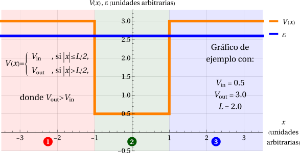
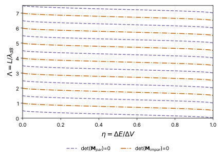
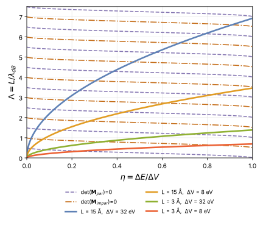

Pozo finito de potencial, caso (b)
Este archivo muestra cómo resolver la ecuación de Schrödinger independiente del tiempo (ESIT) para un pozo finito de potencial cuando la energía de la partícula es mayor que el mínimo del potencial, pero menor que el máximo.

Para cada región indicada en la figura tendremos una ESIT de la forma
Estas ecuaciones son equivalentes a
Las soluciones para cada región serán de la forma
Note que si la energía \(\mathcal{E}\) es menor que alguno de los \(V_j\), ocurrirá que el respectivo \(k_j\) será un número puramente imaginario: \(k_j\to i\gamma_j\).
Para simplificar la descripción, hay algunos parámetros auxiliares que usaremos en ocasiones:
- \(\Delta V=V_\text{out}-V_\text{in}\): la “profundidad” del pozo.
- \(\Delta\mathcal{E}=\mathcal{E}-V_\text{in}\): indica cuánto sobresale la energía \(\mathcal{E}\) por encima del fondo del pozo.
- \(\eta=\Delta\mathcal{E}/\Delta V\): ubicación de la energía \(\mathcal{E}\) relativa a la profundidad del pozo.
Por ejemplo, \(\eta=\frac{1}{2}\) indica que \(\mathcal{E}\) está exactamente a la mitad entre \(V_\text{in}\) y \(V_\text{out}\). - \(\lambda_\text{dB}=\sqrt{\dfrac{2\pi^2\hbar^2}{m\,\Delta\mathcal{E}}}\): longitud de onda de de Broglie de la partícula, tomando \(\Delta\mathcal{E}\) como referencia.
- Imagine que la energía cinética (\(p^2/2m\)) de la partícula fuese \(\Delta\mathcal{E}\).
- Entonces, \(p=\sqrt{2m\,\Delta\mathcal{E}}\).
- La hipótesis de de Broglie dice que \(p=\hbar\,k\), donde \(k=2\pi/\lambda_\text{dB}\).
- Despejando, se obtiene que \(\lambda_\text{dB}=\sqrt{\dfrac{2\pi^2\hbar^2}{m\,\Delta\mathcal{E}}}\).
- \(\Lambda=L/\lambda_\text{dB}\): ancho del pozo, pero expresado en múltiplos de \(\lambda_\text{dB}\).
Con estas sustituciones, podemos escribir también que
\[ \begin{aligned} k_\text{in} &= \sqrt{\frac{2m}{\hbar^2}\,\Delta\mathcal{E}} &&= \sqrt{\frac{2m\,\Delta V}{\hbar^2}}\,\sqrt{\eta}, \\ k_\text{out} &= \sqrt{\frac{2m}{\hbar^2}\,(\Delta\mathcal{E}-\Delta V)} &&= \sqrt{\frac{2m\,\Delta V}{\hbar^2}}\,\sqrt{\eta-1}, \\ \Lambda &= L\sqrt{\frac{m}{2\pi^2\hbar^2}\,\Delta\mathcal{E}} &&= \frac{L}{2\pi}\sqrt{\frac{2m\,\Delta V}{\hbar^2}}\,\sqrt{\eta}. \end{aligned} \]Condiciones de continuidad
Se impone que la función de onda sea continua para que la probabilidad de encontrar a la partícula en una zona no tenga vacíos físicamente inadmisibles.
Dado que el potencial \(V(x)\) es finito en todo su dominio, la derivada de la función de onda también es continua.
Los puntos “problemáticos” son \(x=\pm L/2\), que es donde el potencial exhibe discontinuidades y, a causa de ello, es también donde separamos la función de onda en tramos. Impondremos las condiciones de continuidad en esos puntos \(x=\pm L/2\):
\[ \begin{align*} \psi_1(-L/2)&=\psi_2(-L/2) &\Rightarrow\quad& A_1e^{-iLk_\text{out}/2}+B_1e^{iLk_\text{out}/2} = A_2e^{-iLk_\text{in}/2}+B_2e^{iLk_\text{in}/2}, \\ \psi_1'(-L/2)&=\psi_2'(-L/2) &\Rightarrow\quad& ik_\text{out}\left(A_1e^{-iLk_\text{out}/2}-B_1e^{iLk_\text{out}/2}\right) = ik_\text{in}\left(A_2e^{-iLk_\text{in}/2}-B_2e^{iLk_\text{in}/2}\right), \\ \psi_2(+L/2)&=\psi_3(+L/2) &\Rightarrow\quad& A_2e^{iLk_\text{in}/2}+B_2e^{-iLk_\text{in}/2} = A_3e^{iLk_\text{out}/2}+B_3e^{-iLk_\text{out}/2}, \\ \psi_2'(+L/2)&=\psi_3'(+L/2) &\Rightarrow\quad& ik_\text{in}\left(A_2e^{iLk_\text{in}/2}-B_2e^{-iLk_\text{in}/2}\right) = ik_\text{out}\left(A_3e^{iLk_\text{out}/2}-B_3e^{-iLk_\text{out}/2}\right). \end{align*} \]Así, estas cuatro ecuaciones forman un sistema de ecuaciones lineales para los coeficientes \(A_1, B_1, A_2, B_2, A_3, B_3\). Otras ecuaciones y/o condiciones adicionales se verán caso a caso.
Caso (b): \(V_\text{out}>\mathcal{E}>V_\text{in}\)
Aquí ocurrirá que
Es decir, habrá comportamiento oscilatorio en la Región 2 y comportamiento exponencial en las Regiones 1 y 3.
\[ \begin{array}{rcrcl} \psi_1 & = & A_1e^{-\gamma_\text{out}x} & + & B_1e^{\gamma_\text{out}x}, \\ \psi_2 & = & A_2e^{ik_\text{in}x} & + & B_2e^{-ik_\text{in}x}, \\ \psi_3 & = & A_3e^{-\gamma_\text{out}x} & + & B_3e^{\gamma_\text{out}x}. \end{array} \]Las exponenciales reales pueden converger asintóticamente a cero o diverger cuando nos alejamos del origen. Considerando que \(\gamma_\text{out}\) es positivo:
- En la Región 1, \(e^{-\gamma_\text{out}x}\) diverge cuando \(x\to-\infty\).
- En la Región 3, \(e^{+\gamma_\text{out}x}\) diverge cuando \(x\to+\infty\).
Si imponemos de antemano que \(A_1=B_3=0\), no tendremos que lidiar con ninguna de esas divergencias. Con ello, ya vemos que la función de onda tendrá comportamiento oscilatorio en la Región 2 y comportamiento evanescente en las Regiones 1 y 3:
\[ \begin{array}{rcrcl} \psi_1 & = & B_1e^{\gamma_\text{out}x} & & , \\ \psi_2 & = & A_2e^{ik_\text{in}x} & + & B_2e^{-ik_\text{in}x}, \\ \psi_3 & = & A_3e^{-\gamma_\text{out}x} & & . \end{array} \]Tenemos un grado de confinamiento. Cuando un estado se encuentra confinado debido a que su energía no supera el valor del potencial salvo en regiones acotadas diremos que este estado es un estado ligado (bound states). Los del caso (a), en cambio, suelen llamarse estados de scattering.
Puede notar también que \(k_\text{in}^2+\gamma_\text{out}^2=\dfrac{2m\,\Delta V}{\hbar^2}\)
Paridad de las eigenfunciones
Este pozo de potencial, en la forma en que fue definido, es una función par ya que \(V(-x)=V(x)\). Debido a ello, el operador hamiltoniano conmuta con el operador de paridad. Y nosotros sabemos que dos observables que conmuten pueden escribirse con los mismos estados propios.
\[ [\hat{H},\hat{\Pi}]=\hat{\mathbb{O}} \quad\Leftrightarrow\quad \exists\,|\Psi_n\rangle:\quad \hat{H}|\Psi_n\rangle=\mathcal{E}_n|\Psi_n\rangle \ \wedge\ \hat{\Pi}|\Psi_n\rangle=s_n|\Psi_n\rangle,\quad s_n=\pm1. \]Debido a lo anterior, las funciones de onda propias de este pozo podrán categorizarse en eigenfunciones pares e impares.
Recordemos que habíamos construido las funciones de onda por tramos,
Si tomamos en cuenta la opción de paridad,
\[ \Psi_\text{par}(-x)=+\Psi_\text{par}(x)\quad\Rightarrow\quad \Psi_\text{par}(x)=\begin{cases} B_1e^{\gamma_\text{out}x} & x\lt -\frac{L}{2}\\ 2A_2\cos(k_\text{in}x) & -\frac{L}{2}\le x\lt\frac{L}{2}\\ B_1e^{-\gamma_\text{out}x} & \frac{L}{2}\lt x \end{cases} \]y
\[ \Psi_\text{impar}(-x)=-\Psi_\text{impar}(x)\quad\Rightarrow\quad \Psi_\text{impar}(x)=\begin{cases} -B_1e^{\gamma_\text{out}x} & x\lt -\frac{L}{2}\\ 2i\,A_2\sin(k_\text{in}x) & -\frac{L}{2}\le x\lt\frac{L}{2}\\ B_1e^{-\gamma_\text{out}x} & \frac{L}{2}\lt x \end{cases} \]Vemos que la paridad puede aprovecharse a favor para eliminar incógnitas. Si bien ahora tenemos dos ramas, pares e impares, cada rama solo tiene 2 incógnitas en vez de 4. Incluso podemos simplificar esto aún más al reabsorber las constantes \(A_2\) y \(B_1\) en nuevas constantes:
En el caso (a), el potencial es simétrico, pero el contexto fue interpretado como asimétrico: la partícula venía desde una dirección específica y usamos esa amplitud incidente como referencia. Es por ello que no utilizamos la paridad para analizar ese caso. No obstante, si no nos hubiera importado la interpretación y solo hubiésemos querido calcular soluciones, también podríamos haber aplicado las simplificaciones debido a la simetría de paridad.
Sistemas de ecuaciones y condiciones sobre la energía
Ahora tendremos un sistema de ecuaciones para la rama par y otro para la rama impar. Incorporando también las modificaciones \(k_\text{out}\to i\gamma_\text{out}\), \(A_1\to0\) y \(B_3\to0\), tendremos
En ambas ramas se puede notar que las últimas dos ecuaciones son equivalentes a las dos primeras ecuaciones, de modo que los sistemas tienen dos ecuaciones efectivas:
Cada sistema solo tiene dos ecuaciones y dos incógnitas. Se pueden representar matricialmente como \(\mathbf{M}_s\cdot\vec{v}_s=\vec{0},\) donde:
- El subíndice \(s\) denota la paridad, par o impar. Usaremos \(s\) como el nombre de la paridad o como un signo \(\pm\) indistintamente.
- \(\mathbf{M}_s\) es la matriz de coeficientes, \[ \mathbf{M}_\text{par}=\begin{pmatrix} e^{\frac{L\gamma_\text{out}}{2}}\cos\left(\frac{Lk_\text{in}}{2}\right) & -1 \\ k_\text{in}\,e^{\frac{L\gamma_\text{out}}{2}}\sin\left(\frac{Lk_\text{in}}{2}\right) & -\gamma_\text{out} \end{pmatrix} \quad\text{y}\quad \mathbf{M}_\text{impar}=\begin{pmatrix} e^{\frac{L\gamma_\text{out}}{2}}\sin\left(\frac{Lk_\text{in}}{2}\right) & -1 \\ k_\text{in}\,e^{\frac{L\gamma_\text{out}}{2}}\cos\left(\frac{Lk_\text{in}}{2}\right) & \gamma_\text{out} \end{pmatrix}. \]
- \(\vec{v}_s\) es el vector que contiene a las incógnitas, \[ \vec{v}_s=\begin{pmatrix}\mathcal{A}_s\\ \mathcal{B}_s\end{pmatrix}. \]
Ambos son sistemas homogéneos cuya solución es \(\vec{v}_s=\vec{0}\) (solución trivial). Esta solución es muy poco conveniente porque nos dice que la función de onda, básicamente, no existe. ¿Cómo evadimos la solución trivial? Si imponemos que el sistema de ecuaciones sea linealmente dependiente, entonces podremos escribir algunas de las incógnitas en función de la otras de forma no trivial. La dependencia lineal se puede forzar imponiendo que
\[ \det(\mathbf{M}_s)=0. \]Esto se debe a que \(\det(\mathbf{M}_s)=0\) implica que \(\mathbf{M}_s\) no es invertible, de modo que la ruta \(\vec{v}=\mathbf{M}_s^{-1}\cdot\vec{0}=\vec{0}\) no sería matemáticamente válida. Así se evade la solución trivial.
Usando operadores lógicos,
\[ \begin{array}{rcl} \overbrace{\vec{v}_s\neq\vec{0}}^{\text{Queremos}:}\ \wedge\ \overbrace{\mathbf{M}_s\vec{v}_s=\vec{0}}^{\text{Tenemos}:} & \Leftrightarrow & \vec{v}_s\neq\vec{0}\ \wedge\ \left(\vec{v}_s=\mathbf{M}_s^{-1}\vec{0}\ \vee\ \nexists\,\mathbf{M}_s^{-1}\right) \\[6pt] & \Leftrightarrow & \vec{v}_s\neq\vec{0}\ \wedge\ \left(\vec{v}_s=\vec{0}\ \vee\ \det(\mathbf{M}_s)=0\right) \\[6pt] & \Leftrightarrow & \underbrace{\left(\vec{v}_s\neq\vec{0}\ \wedge\ \vec{v}_s=\vec{0}\right)}_{\text{Contradicción}}\ \vee\ \left(\vec{v}_s\neq\vec{0}\ \wedge\ \det(\mathbf{M}_s)=0\right) \\[6pt] & \Leftrightarrow & \vec{v}_s\neq\vec{0}\ \wedge\ \det(\mathbf{M}_s)=0 \end{array} \]Si no hubiéramos considerado la simetría de paridad, el sistema de ecuaciones modificado con \(k_\text{out}\to i\gamma_\text{out}\), \(A_1\to0\) y \(B_3\to0\) sería
\[ \begin{align*} B_1e^{-\frac{L\gamma_\text{out}}{2}} &= A_2e^{-\frac{1}{2}iLk_\text{in}}+B_2e^{\frac{1}{2}iLk_\text{in}} \\ B_1\gamma_\text{out}e^{-\frac{L\gamma_\text{out}}{2}} &= iA_2k_\text{in}e^{-\frac{1}{2}iLk_\text{in}}-iB_2k_\text{in}e^{\frac{1}{2}iLk_\text{in}} \\ A_2e^{\frac{1}{2}iLk_\text{in}}+B_2e^{-\frac{1}{2}iLk_\text{in}} &= A_3e^{-\frac{L\gamma_\text{out}}{2}} \\ iA_2k_\text{in}e^{\frac{1}{2}iLk_\text{in}}-iB_2k_\text{in}e^{-\frac{1}{2}iLk_\text{in}} &= -A_3\gamma_\text{out}e^{-\frac{L\gamma_\text{out}}{2}} \end{align*} \]Hay 4 ecuaciones y 4 incógnitas, \(B_1, A_2, B_2, A_3\). En este caso, el sistema también se puede representar como \(\mathbf{M}\cdot\vec{v}=\vec{0},\) solo que los vectores y matrices serán de dimensión 4. Y también se debe imponer \(\det(\mathbf{M})=0\) para evitar la solución trivial. Al final, se llega a los mismos resultados que considerando la paridad, pero el camino es un poco más largo.
Discretización de la energía
Acabamos de ver que se necesita imponer \(\det(\mathbf{M}_s)=0\). Para el sistema de ecuaciones de este caso,
Todos los parámetros que aparecen en esta imposición se pueden resumir en:
- \(m\), la masa de la partícula. Es fija.
- \(L\), el ancho del pozo. Si bien se puede ajustar externamente, es fija para un pozo dado.
- \(\Delta V=V_\text{out}-V_\text{in}\), la profundidad del pozo. También es fija para un pozo dado (y ajustable solo externamente).
- \(\Delta\mathcal{E}=\mathcal{E}-V_\text{in}\), la energía de la partícula por encima del fondo del pozo. Como \(\mathcal{E}\) es variable, \(\Delta\mathcal{E}\) también lo es.
El único parámetro variable que tiene cada \(\det(\mathbf{M}_s)=0\) es la energía. Es decir, los ceros de \(\det(\mathbf{M}_s)=0\) constituyen un listado de restricciones sobre los posibles valores que puede adoptar la energía del sistema. Dado que estos ceros suelen aparecer en cantidades discretas, podemos decir que la energía queda sometida a condiciones que imponen su discretización.
¿Y si un valor específico de energía no cumple con \(\det(\mathbf{M})=0\)? Pues, dicha energía está condenada a tener funciones de onda nula:
\[ \mathbf{M}_s\cdot\vec{v}_s=\vec{0}\quad\Rightarrow\quad\left(\det(\mathbf{M}_s)\neq0\ \wedge\ \vec{v}_s=\vec{0}\right)\ \vee\ \left(\det(\mathbf{M}_s)=0\right). \]- Si la energía no satisface \(\det(\mathbf{M}_s)=0\), termina forzando \(\vec{v}_s=\vec{0}\) (solución nula).
- Si la energía sí cumple con \(\det(\mathbf{M}_s)=0\), ahí la solución podría no ser nula.
No hay más opciones. La energía debe cumplir con \(\det(\mathbf{M}_s)=0\). Y como ahora las ecuaciones serán linealmente dependientes, se puede escribir los \(\mathcal{B}_s\) en función de los \(\mathcal{A}_s\):
¿Cómo determinamos las energías desde \(\det(\mathbf{M})=0\)?
Tenemos dos condiciones por separado,
\[ \left\{\begin{array}{rl} \text{Pares}: & k_\text{in}\sin\left(\frac{Lk_\text{in}}{2}\right)=\gamma_\text{out}\cos\left(\frac{Lk_\text{in}}{2}\right) \\[6pt] \text{Impares}: & k_\text{in}\cos\left(\frac{Lk_\text{in}}{2}\right)=-\gamma_\text{out}\sin\left(\frac{Lk_\text{in}}{2}\right) \end{array}\right. \]y en ninguna de ellas podemos despejar algebraicamente los valores de energía ya que ambas son ecuaciones trascendentales. Toda búsqueda debe ser numérica. Por ello, debemos simplificar las expresiones e intentar usar variables adimensionales. Los parámetros auxiliares del comienzo sirven para este propósito, dejando ambas condiciones como
o bien como \(F_\text{par}(\eta)=0\) y \(F_\text{impar}(\eta)=0\), donde
Estas simplificaciones nos permiten empezar la búsqueda.
- Las ecuaciones \(F_\text{par}(\eta)=0\) y \(F_\text{impar}(\eta)=0\) imponen condiciones sobre \(\eta\) y \(\Lambda\), que se grafican a continuación:

- Dados \(m\), \(L\), \(\Delta V\) fijos, calcule \(c=\dfrac{L}{2}\sqrt{\dfrac{2m\,\Delta V}{\hbar^2}}\). Luego:
\(\mathcal{E}\)Tome un valor \(\mathcal{E}\) de energía.\(\downarrow\)\(\Delta\mathcal{E}\)Use \(\mathcal{E}\) para calcular \(\Delta\mathcal{E}\).\(\downarrow\)\(\Delta V\to\eta\)Use \(\Delta\mathcal{E}\) para calcular \(\eta\).\(\downarrow\)\((m,L,\Delta V)\to c\ \to\ \Lambda\)Use \(\eta\) para calcular \(\Lambda=\dfrac{c}{\pi}\sqrt{\eta}\).\(\downarrow\)\((\eta,\Lambda)\)Los valores obtenidos de \(\eta\) y \(\Lambda\) forman el punto \((\eta,\Lambda)\).\(\downarrow\)Compare¿Está \((\eta,\Lambda)\) contenido en alguna de las curvas? Sí: es una energía permitida No: no es una energía permitida (solución trivial)\(\downarrow\)RepitaRepita para otros valores de energía.
- De este modo, las energías permitidas están en las intersecciones de las líneas del gráfico anterior con las de la curva
\[ \Lambda(\eta;L,\Delta V,m)=\frac{L}{2\pi}\sqrt{\frac{2m\,\Delta V}{\hbar^2}}\,\sqrt{\eta}. \]

- Ya tenemos una idea gráfica de cómo se comportan estas energías, ¿pero cómo determinamos numéricamente esas intersecciones?
- \(F_\text{par}(\eta)\) y \(F_\text{impar}(\eta)\) son no lineales. No parece sencillo encontrar sus ceros.
- No obstante, la sustitución intermedia \(\eta=\sin^2\phi\) (con \(0\le\phi\le\frac{\pi}{2}\)) es de mucha ayuda:
\( \begin{aligned} f_\text{par}(\phi) &= F_\text{par}(\eta\to\sin^2\phi) = \cos(\phi+c\sin(\phi)), \\ f_\text{impar}(\phi) &= F_\text{impar}(\eta\to\sin^2\phi) = \sin(\phi+c\sin(\phi)), \end{aligned} \) y ambas son más fáciles de trabajar así.
- Los respectivos ceros de ambas funciones están en
\[
\left\{\begin{aligned}
\phi_{j,\text{par}}+c\sin(\phi_{j,\text{par}}) &= (2j+1)\frac{\pi}{2} \\
\phi_{j,\text{impar}}+c\sin(\phi_{j,\text{impar}}) &= (2j)\frac{\pi}{2}
\end{aligned}\right.,\quad\text{con } j\in\mathbb{Z}.
\]
- Se puede ver un cierto mismatch entre la paridad de la función y el número que multiplica al \(\frac{\pi}{2}\).
- Por lo mismo, no se debe confundir paridad de una función con paridad de un número cuántico.
- Definamos un único número \(n\) para ambos casos:
\(\phi_n+c\sin(\phi_n)=n\dfrac{\pi}{2},\) donde \(n\in\mathbb{Z}\) y \( \left\{\begin{aligned} \Psi_{n\ \text{impar}} &\ \text{son funciones pares}, \\ \Psi_{n\ \text{par}} &\ \text{son funciones impares}. \end{aligned}\right. \)
- Así, debemos encontrar los \(\phi_n\) tales que \(\phi_n+c\sin(\phi_n)=n\frac{\pi}{2}\) y usamos esos \(\phi_n\) para calcular las energías.
- Algorítmicamente:
\((m,L,\Delta V)\to c\)Dados \(m\), \(L\) y \(\Delta V\), calcule \(c=\dfrac{L}{2}\sqrt{\dfrac{2m\,\Delta V}{\hbar^2}}\).\(\downarrow\)\(\phi_n+c\sin(\phi_n)=n\dfrac{\pi}{2}\)Busque valores \(\phi_n\in[0,\pi/2]\) tales que \(\phi_n+c\sin(\phi_n)=n\dfrac{\pi}{2}\), con \(n\in\mathbb{Z}\).\(\downarrow\)\(\phi_n\) y/o \(\phi_{j,s}\)– Los \(n\) impares generan soluciones pares \(\phi_{j,\text{par}}\), con \(j=\frac{n-1}{2}\). – Los \(n\) pares generan soluciones impares \(\phi_{j,\text{impar}}\), con \(j=\frac{n}{2}\).\(\downarrow\)\(\eta_n\) y/o \(\eta_{j,s}\)Calcule \(\eta_n=\sin^2(\phi_n)\) o bien \(\eta_{j,s}=\sin^2(\phi_{j,s})\), donde \(s=\) par o impar.\(\downarrow\)\(\Delta\mathcal{E}_n\) y/o \(\Delta\mathcal{E}_{j,s}\)Calcule \(\Delta\mathcal{E}_n=\eta_n\,\Delta V\), o bien \(\Delta\mathcal{E}_{j,s}=\eta_{j,s}\,\Delta V\).\(\downarrow\)\(\mathcal{E}_n\) y/o \(\mathcal{E}_{j,s}\)Calcule \(\mathcal{E}_n=\Delta\mathcal{E}_n+V_\text{in}\), o bien \(\mathcal{E}_{j,s}=\Delta\mathcal{E}_{j,s}+V_\text{in}\).\(\downarrow\)\(\Psi_n\) y/o \(\Psi_{j,s}\)Use las energías y construya los \(\Psi_n(x)\) o los \(\Psi_{j,s}(x)\).
¿Cuántos estados ligados tendrá el sistema?
Dado que \(0\le\eta\le1\), la definición \(\eta=\sin^2(\phi)\), requiere \(0\le\phi\le\frac{\pi}{2}\).
- Como \(\phi_n\ge0\), los \(n\) no pueden ser negativos.
- Pero \(n\) tampoco puede ser igual a cero: \[ \underbrace{n=0}_{\left(\begin{array}{c}n\ \text{par},\\ \Psi_n\ \text{impar}\end{array}\right)} \ \Rightarrow\ \phi_0=0\ \Rightarrow\ \eta_0=0\ \Rightarrow\ k_\text{in}=0\ \wedge\ \gamma_\text{out}=0\ \Rightarrow\ \underbrace{\Psi_0=\text{constante}}_{\left(\begin{array}{c}\text{Función constante}\\ \text{e impar al mismo tiempo}\\ \text{solo puede ser cero}\end{array}\right)} \]
- Por lo tanto, \(n\ge1\). Ahora nos falta una cota superior para \(n\).
- Los ceros están en \(\phi_n+c\sin(\phi_n)=n\frac{\pi}{2}\). Equivalentemente, \(n=\frac{2}{\pi}\left(\phi_n+c\sin(\phi_n)\right).\)
- Notemos que la función \(n(\varphi)=\frac{2}{\pi}\left(\varphi+c\sin(\varphi)\right)\) es creciente en \(0\le\varphi\le\frac{\pi}{2}\), teniendo en cuenta que \(c>0\): \[ \frac{dn}{d\varphi}=\frac{2}{\pi}\left(1+c\cos(\varphi)\right)>0,\quad\text{ya que } \cos(\varphi)>0 \text{ en el intervalo } \left[0,\tfrac{\pi}{2}\right]. \]
- Por lo tanto, dado un valor fijo de \(c\), el máximo de \(n\) estará en \(\varphi=\pi/2\): \[ n_{\max}=n\left(\varphi=\tfrac{\pi}{2}\right)=\frac{2}{\pi}\left(\frac{\pi}{2}+c\sin\frac{\pi}{2}\right)=1+\frac{2c}{\pi}. \]
- Pero \(n_{\max}\) debe ser un número entero y \(\frac{2c}{\pi}\) puede no serlo. Podemos forzarlo como \[ n_{\max}=\left\lfloor 1+\frac{2c}{\pi}\right\rfloor\ =\ \left\lceil\frac{2c}{\pi}\right\rceil,\quad\text{donde } \lfloor x\rfloor \text{ denota la parte entera de } x \text{ y } \lceil x\rceil \text{ es la función techo (ceiling).} \]
- Con esto, concluimos que \(1\le n\le\left\lceil\frac{2c}{\pi}\right\rceil\) y que existirán \(n_\text{bnd}=\left\lceil\frac{2c}{\pi}\right\rceil\) estados ligados.
- Para interpretar mejor este número de estados ligados:
- Imagine que el pozo tuviera su propia longitud de onda de de Broglie (\(\lambda_{\Delta V}\)) correspondiente a la energía \(\Delta V\).
- Entonces, \(\lambda_{\Delta V}=\dfrac{2\pi}{k_{E=\Delta V}}=\dfrac{2\pi}{\sqrt{2m\,\Delta V/\hbar^2}}\). Equivalentemente, \(\sqrt{\dfrac{2m\,\Delta V}{\hbar^2}}=\dfrac{2\pi}{\lambda_{\Delta V}}\).
- En consecuencia, \(n_\text{bnd}=\left\lceil\dfrac{2c}{\pi}\right\rceil=\left\lceil\dfrac{2}{\pi}\dfrac{L}{2}\sqrt{\dfrac{2m\,\Delta V}{\hbar^2}}\right\rceil=\left\lceil\dfrac{2}{\pi}\dfrac{L}{2}\dfrac{2\pi}{\lambda_{\Delta V}}\right\rceil=\left\lceil\dfrac{2L}{\lambda_{\Delta V}}\right\rceil=\left\lceil\dfrac{L}{\lambda_{\Delta V}/2}\right\rceil.\)
Este número \(n_\text{bnd}=\left\lceil\dfrac{L}{\lambda_{\Delta V}/2}\right\rceil\) nos recuerda a la relación de armónicos en una cuerda de guitarra: los armónicos permitidos eran aquellos donde la longitud de la cuerda era un número entero de semilongitudes de onda.
Aquí tenemos que esa razón entre el ancho del pozo y semilongitudes de onda de de Broglie “del pozo” es quien nos dice cuántos estados ligados habrá.